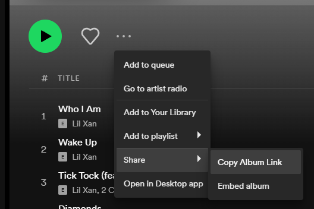
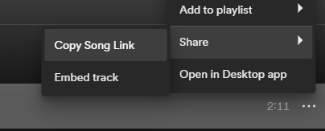
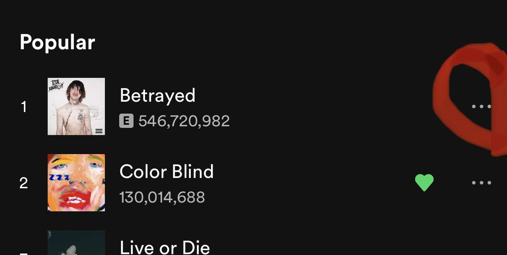
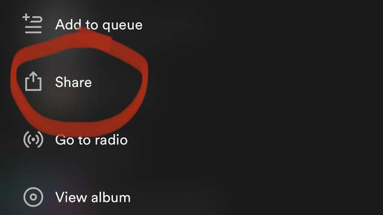
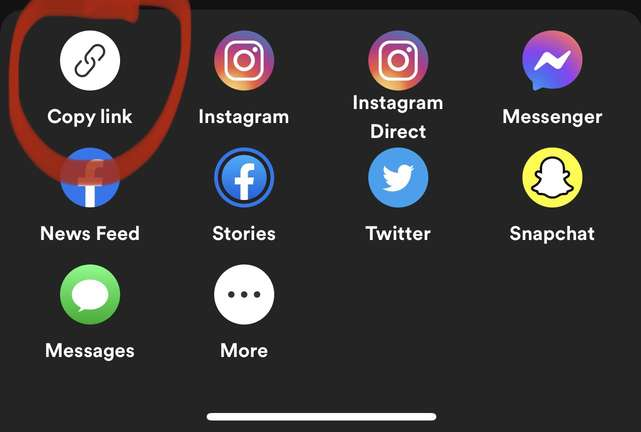
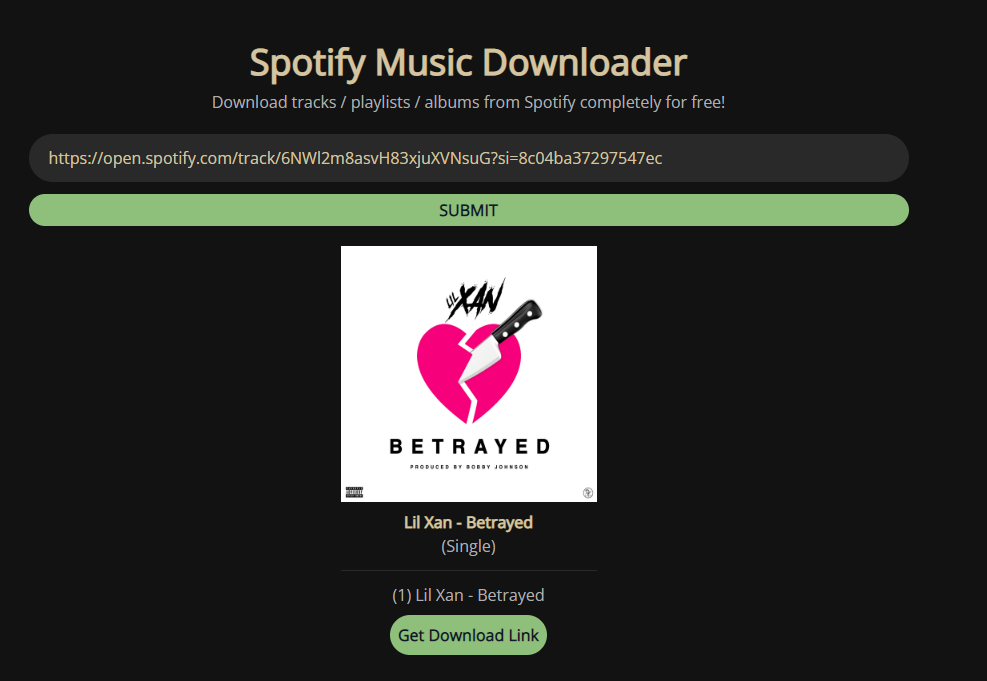
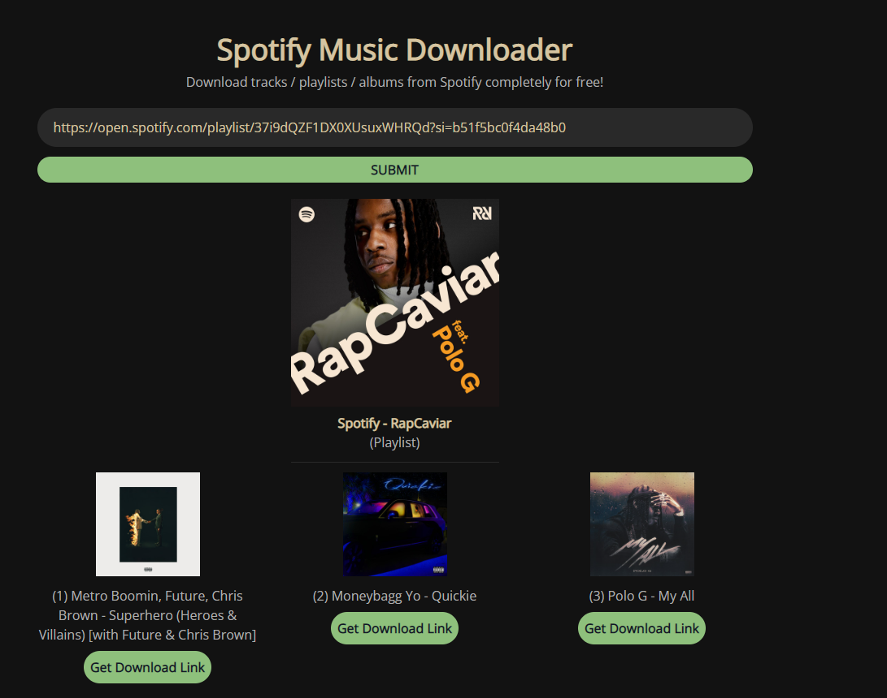

Here's a simple tutorial how to use SpotifyDown:
PC:
 Android/iOS:
  Looking for a way to download songs, albums, and playlists from Spotify? Look no further than our new Spotify Downloader!
This online tool lets you quickly and easily download any song, album, or playlist from Spotify. Best of all, it's free and easy to use!
Enter the URL of the song, album, or playlist you want to download, and our Spotify Downloader will take care of the rest.
You can then save the songs to your computer or mobile device for offline playback. Give it a try today, and enjoy your favorite music anytime and anywhere!
Whether you're a music lover who wants to build a personal collection or someone who likes to stream all their favorite songs online, our Spotify Downloader is the perfect tool for you.
Spotifydown is an amazing application that quickly converts Spotify music to MP3 and other audio formats.
All you have to do is copy and paste the Spotify link into Spotifydown's form, click the 'convert' button, and it's all good!
Not only does Spotifydown make conversion quick and easy, but it also keeps the original quality of your music intact and removes those pesky Spotify ads for good!
With Spotify Music Converter for Spotify, you can instantly convert any song to mp3 format.
With its advanced settings, Spotify Music Converter supports multiple audio formats such as FLAC to MP3, WAV to MP3, AIFF to MP3, plus more, so downloading your favorite tracks has never been easier.
SpotifyDown makes it super easy to download Spotify songs from the comfort of your own home!
All you need to do is open your Spotify app, locate the song or album you want to download, click on the "3 dots" button located next to the title, press "Share," and then press the "Copy Link" button.
Then paste that link into SpotifyDown and press "Submit."
Spotifydown will quickly process your link, so all left for you is to hit the "Download" button, and voila - you're ready to enjoy your music offline for free!
Spotifydown makes it such a simple process that anyone can get their hands on those classic tunes in no time. So what are you waiting for?
Some of the top features of SpotifyDown include:
Quick and easy conversion: With a simple one-click conversion, you can get all your favorite songs to any audio format in no time at all.
Uninterrupted listening: Our powerful ad-block feature allows you to enjoy your music free from those pesky and annoying Spotify ads!
High-quality music: The great thing about our tool is that it keeps the original quality of your music intact, so you get an amazing listening experience every time.
Advanced settings support: If you want to get more out of your music, our Spotify Downloader also supports a variety of advanced audio settings, such as FLAC to MP3 and WAV to MP3.
So if you want an easy way to download songs, albums, and playlists from the popular streaming service, look no further than our Spotify Downloader!
Its fast and simple conversion process, ad-free listening, and high-quality output make it the perfect solution for all your music needs. Give it a try today!
There are many benefits to using Spotify Downloader online.
To start with, it's completely free and easy to use. No technical knowledge or special software is required!
In addition, our advanced settings allow you to customize your music in a number of different ways so that you can download your music at the highest quality possible.
And finally, our fast and reliable service means you never have to worry about waiting around for your songs - they'll be ready and waiting for you the second you need them!
So if you're an avid music fan who wants a simple way to easily download all their favorite tracks from one of the most popular streaming platforms, look no further than our Spotify Downloader online!
So why wait? Try it out today and discover the world of music downloading for yourself! And don't forget to tell your friends about all the amazing benefits of using our tool - we're sure they'll thank you for it!
There are many reasons why SpotifyDown outperforms other similar tools or services.
To start with, it's fast, easy to use, and accessible from anywhere - no downloads or special software required!
In addition, our advanced settings allow you to customize your music in a number of ways for the best possible listening experience.
And finally, our reliable and secure technology means you never have to worry about downloading malware-infected files. So if you're looking for an all-in-one solution for all your Spotify downloading needs, look no further than our Spotify Downloader today!
1. Do you need Spotify premium to download songs?
No. With SpotfiyDown, you can download songs from Spotify without a premium account. Our tool works with both free and premium accounts, so anyone can enjoy the benefits of downloading music for offline listening whenever they want.
2. How fast is the Spotify Downloader?
The Spotify mp3 downloader is extremely fast, allowing you to download songs in seconds. Our advanced technology ensures a seamless and smooth downloading process every time, so you never have to worry about waiting around for your music.
3. Is SpotifyDown safe to use?
Yes. The Spotify Downloader uses cutting-edge encryption technologies to protect your data and privacy completely. In addition, our tool is regularly updated to avoid potential security threats so that you can trust us with all your downloading needs.
Although Spotify is a great music streaming service, there are still many reasons why you might want to download and convert your favorite tracks into MP3 files.
The Spotify Music Downloader is a great tool for doing just that, offering high-speed conversions, batch processing, and the ability to burn songs to CD or share them via email.
Best of all, it can remove DRM protection from Spotify songs at 5x faster speed without losing quality – meaning you can enjoy your music offline however you want. So why not give it a try?
With the Spotify Music Converter for Spotify, you can easily download and convert your favorite tracks completely for free!
This website is not affiliated with or endorsed by Spotify AB. Our use of the name "Spotify" is for context, not claiming any ownership. It remains the property of the copyright holder.
Spotifydown.com doesn't host any copyrighted material. We utilize third party services to accomplish our goals.
© 2024 SpotifyDown.com